Mes expériences professionnelles
Stage – Analyste de Données Médicales
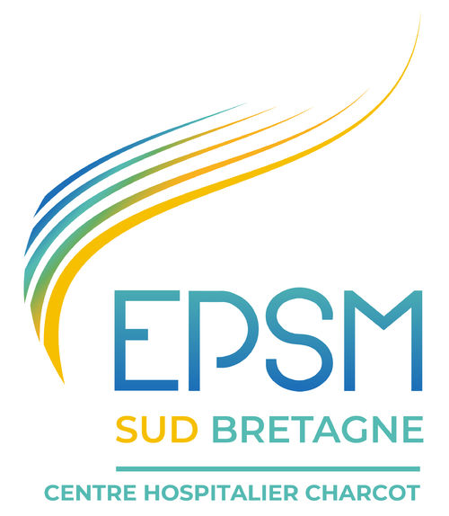
Contexte et environnement
J'ai effectué un stage de trois mois à l'EPSM Bretagne Sud (Établissement Public de Santé Mentale) Jean-Martin Charcot, au sein du Département d'Information Médicale (DIM). Cet établissement spécialisé en psychiatrie, implanté à Caudan dans le Morbihan, couvre un large territoire s'étendant sur deux départements et prend en charge plus de 12 000 patients annuellement.
Qu'est-ce que le DIM ?
Le Département d'Information Médicale est chargé d'assurer la qualité, l'exhaustivité et la confidentialité des données médicales. Il répond aux demandes internes comme externes en transmettant les indicateurs nécessaires au pilotage stratégique et financier de l'établissement.
Ma mission principale : Production des rapports d'activité hospitalière 2024
Ma mission centrale consistait à analyser l'activité hospitalière de 2024 et produire les rapports annuels pour l'ensemble des pôles et unités de l'établissement. Cette mission s'inscrivait dans un contexte particulier de transition logicielle et de réorganisation structurelle, nécessitant une approche méthodologique rigoureuse.
Ce projet s'est articulé autour de trois défis majeurs :
Défi 1 : Intégration de données multi-sources (Migration logicielle)
Le pôle enfant-adolescent avait migré vers un nouveau logiciel (Sillage) en cours d'année 2024, créant une scission des données entre deux systèmes : Cortexte (ancien) et Sillage (nouveau). J'ai dû reconstituer un jeu de données cohérent en fusionnant les informations issues de ces deux bases distinctes via Business Object et Access, tout en garantissant la cohérence et la qualité des données analysées.
Défi 2 : Réorganisation du rapport du pôle adulte (Fusion organisationnelle)
Suite à la fusion des pôles SAUCL (Secteur Adulte Urgence Crise Liaison) et REHAB (Réhabilitation psychosociale), j'ai dû concevoir un nouveau rapport unifié. Cette mission a nécessité des échanges constants avec les professionnels du terrain pour définir la structure optimale du rapport et assurer la comparabilité des indicateurs entre 2023 et 2024, en recalculant rétrospectivement les données 2023 selon la nouvelle organisation.
Défi 3 : Analyse des activités transversales
J'ai également analysé des activités "support" essentielles : plateau médico-technique (EEG, ECG, radiologie), assistantes sociales et Dispositif de Régulation et d'Orientation (DRO). Ces activités, moins standardisées que les soins directs, ont nécessité une approche sur mesure avec des requêtes SQL complexes pour extraire et structurer des données hétérogènes.
Méthodologie et outils techniques
Mon travail s'appuyait sur un système semi-automatisé reliant Access et Excel. La base Access contenait les données consolidées et les requêtes analytiques, connectée à des classeurs Excel structurés par thématiques. Grâce à Power Query, les feuilles interrogeaient directement les requêtes Access et se mettaient à jour dynamiquement, évitant les manipulations manuelles et réduisant les risques d'erreur.
Une étape essentielle de mon travail consistait à vérifier et fiabiliser les données en combinant approches techniques, outils métiers et expertise terrain des professionnels. Je procédais à des recoupements avec les extractions validées du RIM-P (Recueil d'Informations Médicalisé en Psychiatrie) pour garantir la cohérence des résultats.
Exemples d'analyses produites :
Les rapports comprenaient des analyses détaillées de l'évolution de l'activité par pôle, des indicateurs de performance par unité, et des visualisations des parcours patients. Voici quelques indicateurs types analysés :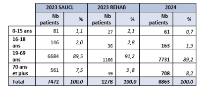
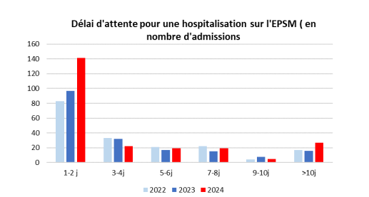
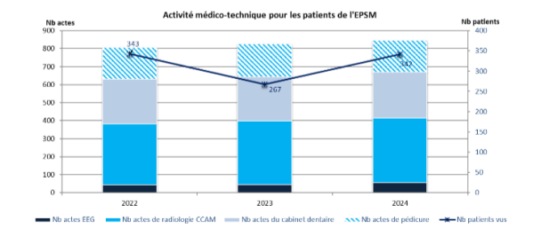
Missions quotidiennes et support opérationnel
Production de rapports d'activité complets
Parallèlement aux projets clés, j'ai produit les rapports annuels pour plus de 100 unités de soins, combinant données quantitatives (nombre de patients, actes, durées de séjour) et analyses qualitatives (origine géographique, diagnostics). Ces documents incluaient un historique sur trois années pour identifier les tendances et variations d'activité.
Réponses aux demandes ponctuelles
J'ai également traité de nombreuses sollicitations de médecins et cadres : extractions de données ciblées, indicateurs spécifiques, analyses de population. Cette dimension réactive m'a permis de mieux comprendre les enjeux locaux et les besoins concrets des équipes.
Fiabilisation et contrôle qualité
Un volet important de mon travail consistait à identifier et corriger les incohérences dans les données : erreurs de saisie, patients sur les mauvaises unités, dates incohérentes. Cette vigilance analytique était indispensable pour garantir la fiabilité des rapports transmis.
Résultats et impact
J'ai livré 5 rapports d'activité synthétiques pour les différents pôles, plus de 100 rapports d'unités détaillés, et de nombreuses analyses ponctuelles. Ces documents ont alimenté les réunions de bilan, les communications internes et les argumentaires décisionnels de l'établissement.
Mes analyses ont notamment révélé une augmentation continue de l'activité (+31% de patients entre 2011 et 2024), l'impact de la migration logicielle sur certains indicateurs, et des pistes d'amélioration pour l'organisation des parcours patients.
Compétences développées
Techniques
Ce stage m'a permis de développer mes compétences en traitement de données complexes multi-sources, requêtage SQL avancé, manipulation de bases de données Access, et production de rapports automatisés avec Power Query.
Méthodologiques
J'ai renforcé mes capacités d'analyse critique des données, de documentation des processus, de gestion de projets avec contraintes techniques, et d'adaptation aux changements organisationnels.
Professionnelles
L'immersion dans un établissement de santé mentale m'a permis de développer ma compréhension des enjeux hospitaliers, ma capacité de dialogue avec des experts métier variés, et ma rigueur dans un environnement où chaque chiffre peut influencer des décisions stratégiques.
Voici les outils mobilisés durant ce stage :
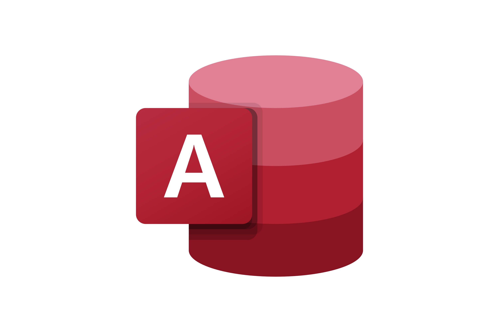
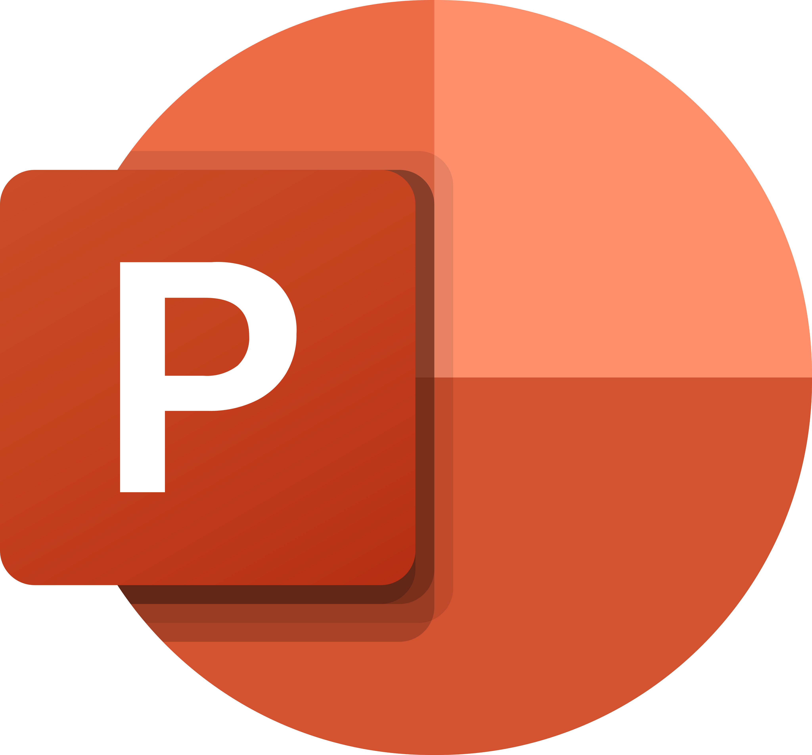
Alternance – Chargée d'études en pilotage commercial
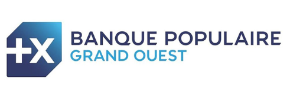
Contexte de l'alternance
Depuis septembre 2025, je réalise une alternance au sein de la Banque Populaire Grand Ouest (BPGO) en tant que chargée d'études au sein du service de pilotage commercial. Cette alternance, d'une durée d'un an, s'inscrit dans une démarche de professionnalisation dans le cadre de ma dernière année en BUT Science des Données.
Qu'est ce que le pilotage commercial ?
Le service de pilotage commercial de la BPGO accompagne les différentes directions et antennes de la banque en développant et mettant à disposition des indicateurs de suivi, des outils décisionnels ainsi que des analyses visant à piloter la performance commerciale et à éclairer les prises de décision.
Ma mission principale : Développer, analyser et visualiser des indicateurs d'activités
Ma mission principale, qui a rythmé une partie significative de mon alternance, a consisté en la conception et la mise en œuvre d'un outil décisionnel innovant pour l'analyse de l'activité au sein des antennes bancaires. Ce projet ambitieux m'a permis de maîtriser l'ensemble de la chaîne de valeur, de la compréhension des besoins métier à la livraison d'une solution fonctionnelle et performante.
Ce projet s'est déroulé en trois étapes clés, chacune représentant un volet distinct de mon intervention :
Étape 1 : Compréhension du Besoin Métier et Stratégie Projet
La première phase, fondamentale pour poser des bases solides, fut la compréhension approfondie du besoin métier. J'ai collaboré étroitement avec mon manager pour recueillir et synthétiser les exigences. Ces demandes ont été formalisées dans un tableau Excel, détaillant chaque indicateur souhaité, sa définition exacte, ainsi que le nom du référent métier chargé de sa validation et de répondre aux questions spécifiques.
Étape 2 : Développement Technique des Indicateurs (SQL & Teradata)
Ensuite, la mission s'est orientée vers le développement technique. J'ai créé environ 30 indicateurs de performance en langage SQL sur la plateforme Teradata. Chaque indicateur nécessitait un processus en plusieurs temps : développement d'une requête SQL initiale, phase de recette avec validation des référents métier, puis passage en production.
Étape 3 : Conception et Déploiement de l'Application Décisionnelle (Power BI)
Enfin, j'ai procédé au développement de l'application sous Power BI. L'objectif principal était de proposer une visualisation claire et simple de tous les indicateurs, permettant aux différentes antennes de suivre leur activité et d'analyser leurs performances.
Résultats final
Aujourd'hui l'application est déployée au sien de la banque et utilisée quotidiennement par les 2500 collaborateurs dans le réseau. Voici un extrait d'une page issue de l'application finale :
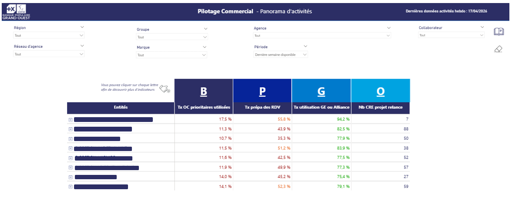
Projets Annexes
Au-delà du projet Panorama d'activités, mon alternance ne s'est pas limitée à une seule mission. En parallèle de ce travail de fond, j'ai été associée à d'autres projets propres au service du pilotage commercial, qui m'ont permis d'explorer des sujets plus opérationnels et de mobiliser des compétences différentes.
Tableau de Bord Power BI pour l'Analyse des Appels Sortants
Contexte et objectif
Ma première mission, dès mon arrivée en septembre, a été le développement d'un suivi Power BI dédié aux appels sortants. L'objectif était de permettre aux managers de disposer d'une vision claire des appels réalisés par leurs équipes et de vérifier que les clients à contacter sur une période donnée ont bien été appelés, notamment durant les plages horaires dédiées aux appels.
Défis techniques
Le principal défi résidait dans le volume de données : plus de 8 millions de lignes dans la table d'origine couvrant l'ensemble des événements de téléphonie. J'ai créé une vue SQL optimisée filtrant uniquement les appels sortants des agences, réduisant la volumétrie à moins de 3 millions de lignes pour optimiser les performances de Power BI.
Réalisation
L'application développée comprend quatre blocs principaux : un calendrier hebdomadaire des appels par heure avec code couleur, un graphique des appels qualifiés (plus de 30 secondes), l'évolution des volumes par mois/semaine, et un tableau de synthèse par entité. Le rapport, mis à jour quotidiennement, est désormais intégré dans les habitudes de pilotage des équipes. Voici des extraits des visualisations issues de l'application finale :
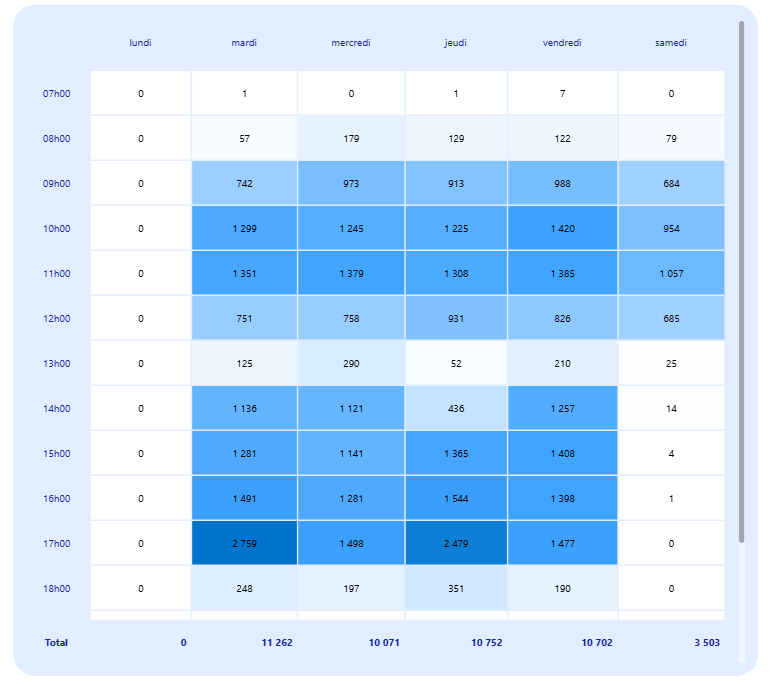
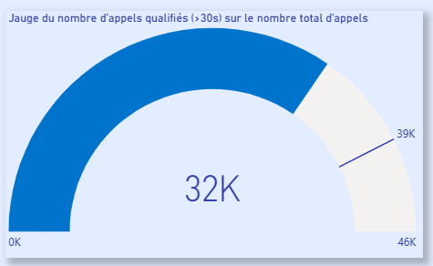
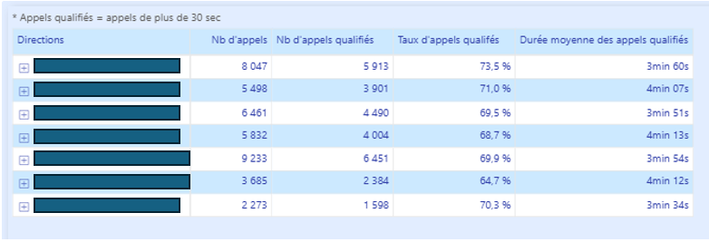
Production de Classements pour Challenge Commercial
Mission "Je protège et j'assure mes clients"
J'ai participé au suivi d'un challenge commercial dédié aux assurances sur la période du 2 au 31 mars. Ma mission consistait à produire cinq types de classements (collaborateurs, CRC, agences, groupes, directions) avec des règles spécifiques par métier et des critères d'éligibilité complexes.
Méthodologie rigoureuse
J'ai créé une table de référence dans le datamart Teradata pour intégrer les objectifs spécifiques au challenge, puis développé cinq requêtes SQL principales pour calculer les Taux d'Atteinte des Objectifs (TAO) par indicateur. Les classements intégraient des critères d'éligibilité stricts : TAO minimal de 75% par indicateur, TAO moyen supérieur à 100%, et au moins une vente spécifique.
Livraisons et résultats
J'ai produit des classements hebdomadaires via des fichiers Excel automatisés avec Power Query, incluant une page de présentation auto-suffisante expliquant les règles. Le rythme soutenu (livraisons hebdomadaires puis finale) m'a formée à la gestion de projets sous contrainte temporelle forte.
Support Quotidien et Gestion du SAV
Au-delà des projets structurés, j'ai assuré une implication quotidienne dans le support aux utilisateurs via une plateforme dédiée où les collaborateurs du réseau remontent leurs questions sur nos indicateurs et outils. Chaque demande nécessitait une analyse approfondie pour identifier l'origine du problème (mauvaise interprétation, biais dans les indicateurs, ou dysfonctionnement technique) et fournir une réponse pédagogique claire.
Ces missions de support m'ont permis de me familiariser rapidement avec l'écosystème des outils de la banque, de comprendre le contexte opérationnel et de maîtriser les bases de données fréquemment utilisées. Elles ont renforcé ma polyvalence et ma capacité à apporter des réponses rapides et pertinentes.
Outils et environnement technique
Cette alternance s'inscrit dans un environnement technique professionnalisant. J'utilise principalement Power BI pour la production d'outils décisionnels et la visualisation des données, ainsi que Teradata pour le requêtage SQL et l'exploitation des bases de données.
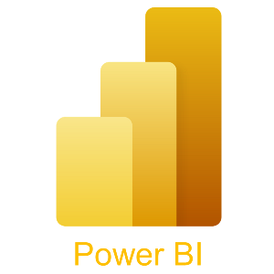
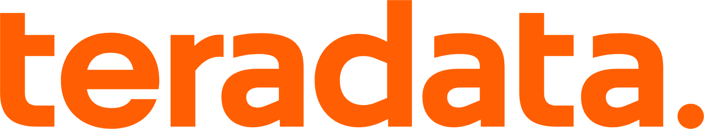
Compétences développées
Techniques
Cette alternance m'a permis de développer des compétences méthodologiques solides, notamment en suivi de projet, en documentation fonctionnelle, en planification et en organisation du travail sur des projets de moyenne à longue durée.
Méthodologiques
Sur le plan technique, j'ai renforcé mes compétences en requêtage SQL, en compréhension des environnements de bases de données, ainsi qu'en conception de tableaux de bord Power BI et en développement d'indicateurs statistiques.
Professionnelles
Enfin, cette expérience m'a permis de développer des compétences professionnelles essentielles telles que le travail collaboratif, la communication de résultats et l'adaptation à un environnement métier exigeant.